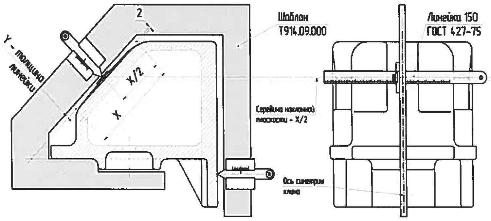
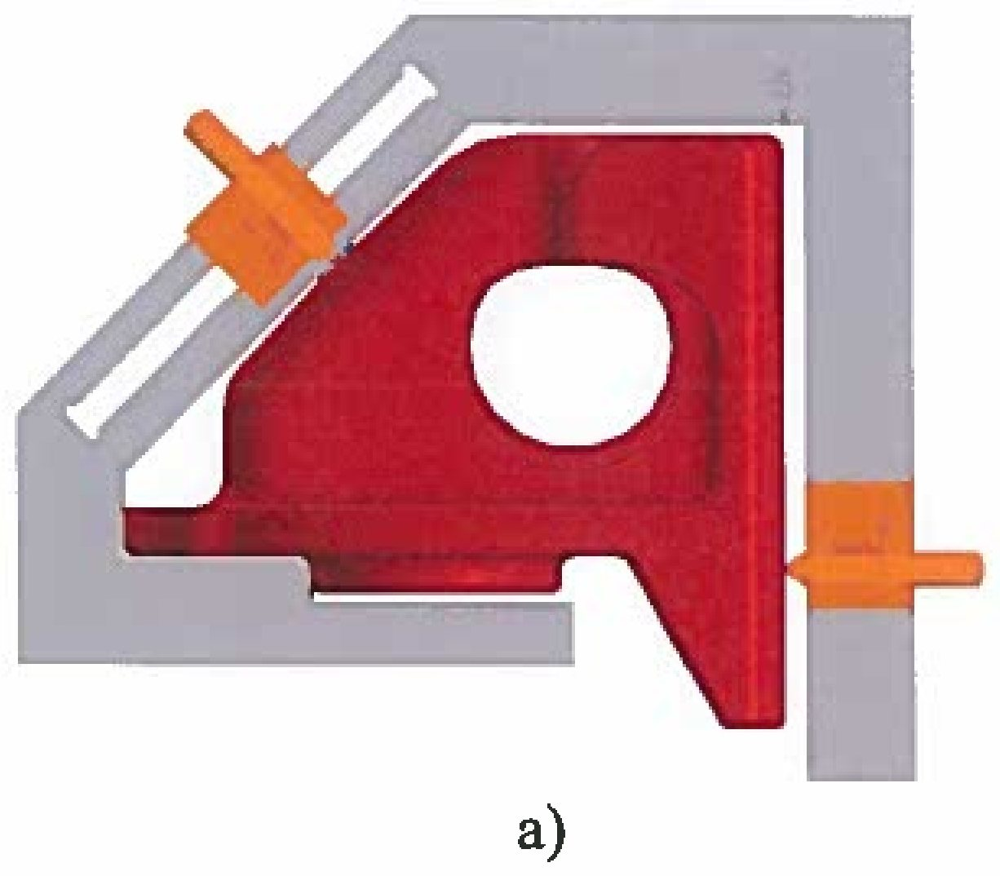
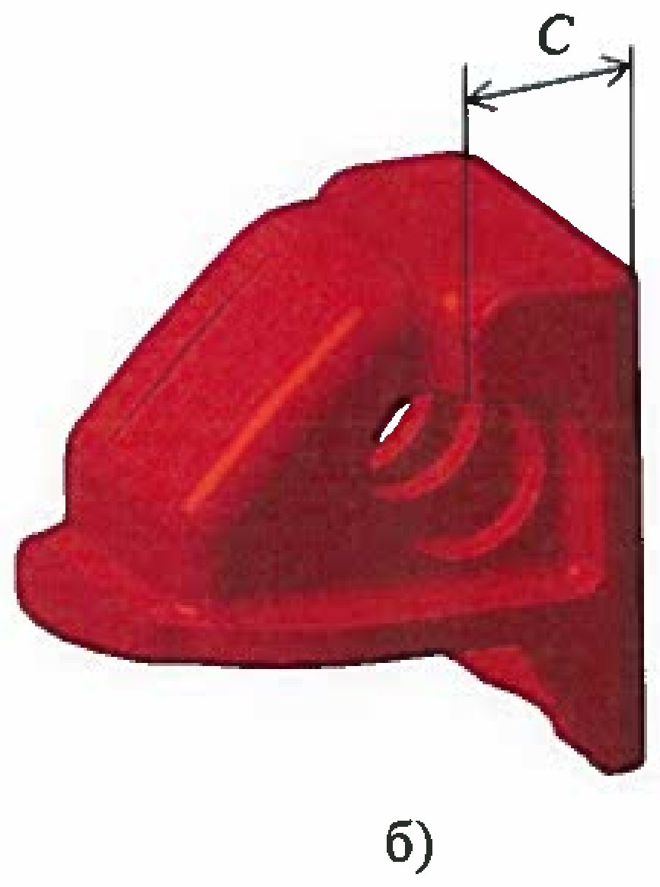
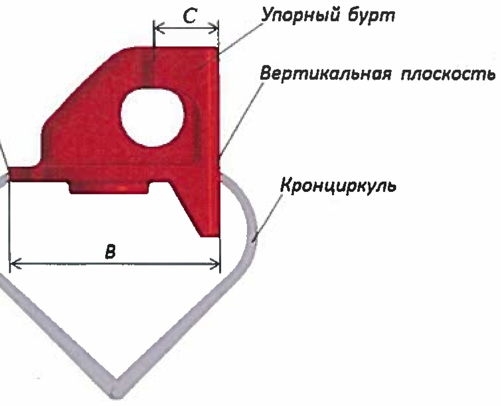
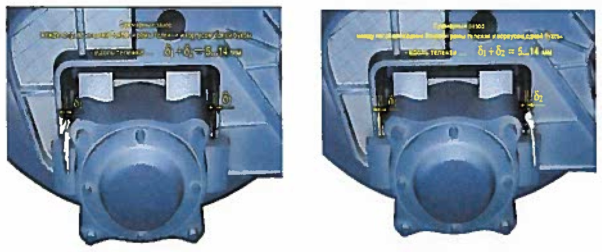

Friksion pona va buksa zazorlari
5.3.1–5.3.3 va 5.2.13: yoriqlar, pona yeyilishini hisoblash, upor burt «С», yangi pona o'lchamlari va buksa bilan umumiy zazorlar.
5.3.1 — Yoriqlarni nazorat qilish
Friksion pona quyma detal va u doimiy o'zgaruvchan yuk ostida ishlaydi. Yoriq odatda qattiqlik qovurg'alaridan boshlanadi.
5.3.2 — Nazoratga tayyorgarlik: «X/2» ni belgilash

Nazorat boshlanishidan oldin chizg'ich 150 ГОСТ 427 yoki ШЦ–I–150–0,1 bilan ponaning qiya yuzasi o'lchami «X» o'lchanadi va uning o'rtasi «X/2» istalgan usulda belgilanadi. O'lchash ponaning simmetriya o'qi bo'yicha o'rta kesimda bajariladi.
Bu qadam tashlab ketilsa, keyingi barcha o'lchashlar tasodifiy nuqtada bajariladi va natijalarni solishtirib bo'lmaydi.
5.3.2 — Yeyilishni o'lchash va ikkita tuzatma

Shablon ponaga o'rnatilib asosiga zich bosiladi. Ponaning pastki chiqig'i shablonning ichki old vertikal qirrasiga va gorizontal tayanch qirrasiga zich tegishi shart.
| Tekislik | O'lchash | Tuzatma |
|---|---|---|
| Vertikal | Vertikal yuzadagi dvijokni ponaga tekkuncha suring | Natijadan 2 mm AYIRING |
| Qiya | «X/2» ga chizg'ich qo'yib, qiya dvijokni chizg'ichga tekkuncha suring | Natijaga chizg'ich qalinligi «Y» ni QO'SHING |
Nima uchun tuzatmalar kerak? Vertikal o'lchashda 2 mm — shablon konstruksiyasidagi doimiy siljish, u nominal to'liqlik o'lchamiga keltiradi. Qiya o'lchashda esa dvijok ponaga emas, chizg'ichga tiraladi — shuning uchun chizg'ichning o'z qalinligi hisobga olinadi.
5.3.2 — Upor burt uzunligi «С»

| Chizma | «С» eng kichik qiymati |
|---|---|
| M1698.00.003 (-01), 1699.04.007-01, ВАГР-0113.50.00.002-01 | 66 mm dan kam emas |
| 100.30.001-1, 2128-05.50.00.005 | 67 mm dan kam emas |
| 1699.04.007 | «С» o'lchanmaydi |
5.3.3 — Yangi tayyorlangan ponani nazorat qilish

| Belgi | Nima | Qanday o'lchanadi | Me'yor |
|---|---|---|---|
| В | Pona asosining uzunligi | Kronsirkul, o'lchamni 300 mm chizg'ichga ko'chirib | 212 ± 2 mm |
| Z | Qiya tekislikdagi o'yiq chuqurligi | Chizg'ich 150 + № 1 yoki № 2 shchuplar | 2 ± 1 mm |
| С | Vertikal tekislikdan upor burtgacha | ШЦ–I–150–0,1 | 69 ± 1 mm (СЧ 35) yoki 71 ± 2 mm (Сталь 20Л) |
| D | Qiya tekislik kengligi | ШЦ–I–150–0,1 | 130 ± 2 mm |
3-jadval bo'yicha aniq taqsimot: M1698.00.003, 1699.04.007-01, ВАГР-0113.50.00.002-01 — СЧ 35, «С» = 69 ± 1 mm; 100.30.001-1 va 2128-05.50.00.005 — Сталь 20Л, «С» = 71 ± 2 mm; 1699.04.007 bo'yicha «С» o'lchanmaydi.
5.2.13 — Yon rama va buksa orasidagi umumiy zazorlar

| Yo'nalish | ДР | КР |
|---|---|---|
| Aravacha o'qi bo'ylab | 5…14 mm (18-100: 3…12) | 5…12 mm (18-100: 3…10) |
| Aravacha o'qiga ko'ndalang | 5…13 mm (18-100: 5…12) | 5…11 mm (18-100: 5…10) |
Nazorat savollari
Avval o'zingiz javob bering, so'ngra tekshiring.
1. Pona vertikal tekisligi yeyilishini o'lchaganda natijaga nima qilinadi?
2. Qiya tekislik yeyilishini o'lchaganda-chi?
3. Depo ta'mirida ponaning umumiy yeyilishi qancha bo'lishi mumkin?
4. Yangi ponaning asos uzunligi «В» va qiya tekislik kengligi «D» qancha bo'lishi kerak?
5. Buksa zazorlarini hisoblashda o'lchangan qiymatlardan qaysi biri olinadi?
Manba: РД 32 ЦВ 050-2020 — ГОСТ 9246-2013 bo'yicha tip 2 yuk vagon aravachalarini ta'mirlashda uzel va detallar parametrlarini o'lchash metodikasi.
Andijon vagon deposi · telejka ta'mirlash sexi.